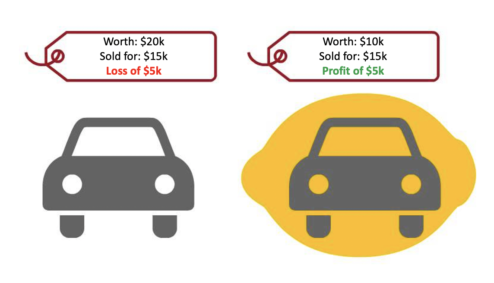

6강. 정보경제이론과
시장실패, 정부실패
완전경쟁시장 (perfect competition market)
〈완전경쟁시장의 조건〉
- 다수의 판매자와 구매자 (price-taker)
- 동질적 상품
- 진입장벽 X
- 완전한 정보공유
정보의 비대칭성
경제주체 간 정보의 양과 질이 서로 다른 경우,
즉 완전한 정보공유가 불가능한 상황
감추어진 특성
거래 한 당사자가 상대방의 유형 혹은 특성에 대한 정보가 부족한 경우 (예. 레몬마켓)
감추어진 행동
거래 한 당사자가 상대방의 행동에 대한 정보가 부족한 경우 (예. 도덕적 해이)
정보 비대칭성에 따른 탐색행위
탐색행위의 한계비용
= 손실시간에 따른 기회비용
= 시간당 임금 등
탐색행위의 한계편익
한계편익곡선의 우측이동
- 상품가격이 과도하게 분산되어 있을 경우
- 상품 구입량이 클 경우
- 탐색된 정보의 유효시간이 클 경우
레몬마켓과 역선택
레몬마켓(market for lemons)
상품의 외양만 보고 품질을 정확하게 알 수 없는 상황에서 바람직하지 않은 상품만 남게 되는 시장
역선택(adverse selection)
거래 상대방에 대한 정보가 부족한 상황에서 바람직하지 않은 상대방과 거래할 가능성이 높은 상황

본인-대리인 관계와 도덕적 해이
본인-대리인 관계(principal-agent relationship)
어떤 일을 본인이 직접하기에는 능력이 없거나 시간이 일처리를 맡기는 경우 발생하는 관계
(예. 간접민주주의, 전문경영인제 등)
도덕적 해이(moral hazard)
본인이 대리인의 행동을 일이 감시하지 못하는 상황을 이용해 대리인이 자신의 이익을 좇아 행동하는 현상
(예. 보험계약자가 사고방지노력을 하지 않는 경우, 전문경영인이 평판 혹은 이직을 위해 매출액만 신경 쓰는 경우)
도덕적 해이(moral hazard) 관련 유인책
- 실적에 따른 임금 지급
- 효율임금의 지급: 균형임금보다 더 높은 임금을 지급 (단점: 실업발생 가능성)
- 작업감독제도
정보 비대칭성 문제의 근본 방향
계약 등의 강제적 규제(regulation)
+
인센티브(incentive)
시장과 효율성
파레토 효율성(pareto efficiency)
특정한 자원배분 상태에서 누구에게도 손해가 가지 않으면서
추가적인 이득이 가능한 새로운 배분상태로 이동하는 것이 불가능한 상태
출처: 김동건, 2012, 비용−편익분석, 박영사.
파레토효율성의 조건
- 주어진 자원을 최대한 사용해서 생산효율성을 달성해야 함
- 교환을 통해 생산물을 배분할 수 있어야 함
→ 완전경쟁시장의 경우 가격을 통해 파레토 효율성 달성 가능
시장실패(market failure)
시장이 효율적인 자원배분을 가져다 주지 못하는 상태
시장실패의 원인
불완전 경쟁: 독점 및 과점시장의 사례
공공재(public goods): 여러 사람의 공동소비를 위해 생산된 재화 및 서비스 중 비경합성과 배제불가능성을 가진 것
- 비경합성(non-rivalry): 한 사람이 소비하면 다른 사람의 소비 기회가 줄어들지 않는 경우
- 배제불가능성(non-excludability): 대가를 치르지 않는 사람을 소비하지 못하게 할 수 없는 경우
→ 가격기제가 작동하지 못함
외부성(externality): 어떤 사람의 행동이 대가없이 제3자에게 의도하지 않은 혜택이나 손해를 가져다 주는 경우
(예. 손해: 배기가스 배출, 혜택: 기초학문 발전에 따른 효과)
시장실패에 대한 정부의 개입
- 직접적 행동: 공공재의 직접적인 공급
- 유인의 제공: 시장기구를 활용하되 정책적 유인만 제공
(예. 세제혜택, 정책금융, 소비세부과 등) - 민간부문의 행동을 규제
정부실패(government failure)
정부의 개입 자체가 비효율성을 가져오는 경우
정부실패의 원인
- 제한된 정보와 지식: 정부정책의 효과에 대한 불확실성
- 민간부문 반응의 통제 불가능성 (예. 부동산시장)
- 정치적 과정에서의 제약: 정치적 타협에 따른 결과
- 관료조직의 도덕적 해이
정부실패에 대한 해결책
- 제도개혁: 관료조직 비대화, 불명확성 등 방지
- 유인의 제공: 관료의 평가 및 보상제공
- 경쟁도입: 민간과의 경쟁체제
공공재의 문제
공공재(public goods)
여러 사람의 공동소비를 위해 생산된 재화 및 서비스 중 비경합성과 배제불가능성을 가진 것
비경합성(non-rivalry): 한 사람이 소비하면 다른 사람의 소비 기회가 줄어들지 않는 경우 (한계비용 = 0)
배제불가능성(non-excludability): 대가를 치르지 않는 사람을 소비하지 못하게 할 수 없는 경우
→ 무임승차자 문제(free-rider problem) 발생
공공재 생산비용을 부담하지 않으면서 소비에는 참여하고자 하는 경향
→ 적정한 수준의 부담 유도(강제적 납부) + 공공재 생산량을 위한 선호 파악 필요
환경오염과 코우즈 정리
환경오염의 외부성
환경오염 발생자가 비용을 지불하지 않고 다른 3자에게 피해를 입히는 상황
(현실에서는 환경관련 조세를 통해서 비용지불 및 피해자에 대한 재분배)
코우즈 정리(Coase Theorem)
외부성 문제가 존재할 경우 이해 당사자들 간의 자발적 협상을 통한 거래를 통해 파레토효율성을 달성할 수 있음
→ 환경세 부과와 같은 정부의 과도한 개입이 오히려 비효율적일 수 있음
→ 협상(bargaining)을 위한 거래비용(transaction cost) 수준이 중요. 실제 현실에서 거래비용은 0이 아님 (예. 이해당사자 식별 어려움 등)
→ 핵심은 어떤 경제제도가 거래비용을 더 낮출 수 있는지 주목하자는 것
조세부담의 전가
어떤 경제주체에게 부과된 조세의 부담이 다른 경제주체로 옮겨가는 것
수요의 가격탄력성이 낮을수록,
공급의 가격탄력성이 클수록
소비자 전가가 더 커짐
Q & A
권규상 Kyusang Kwon
(kyusang.kwon@chungbuk.ac.kr)